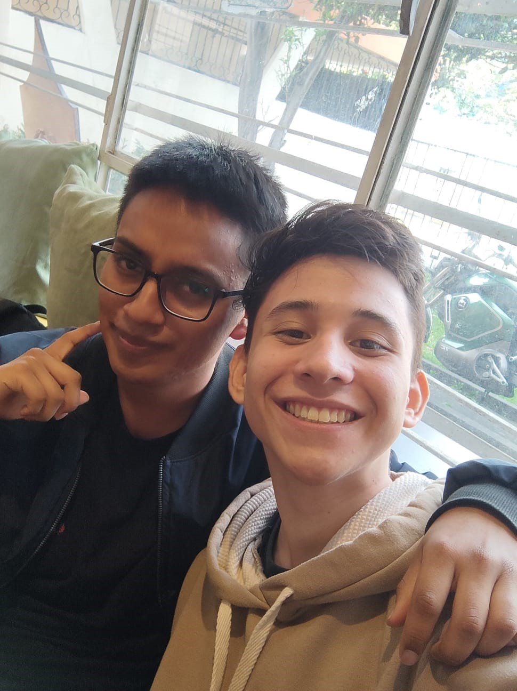

|  |
Jairo Lennin Quispe OrtizEstudiante de Ingeniería de Sistemas - EPNCelular: 0985782484 |
Estudiante comprometido con la innovación tecnológica. Presidente de la Asociación de Estudiantes de la FIS, con experiencia en liderazgo, organización de eventos y representación estudiantil. Interesado en desarrollo backend y análisis de datos como herramientas de cambio.